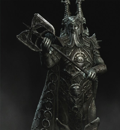

В раннюю Меретическую эру Скайрим населяли фалмеры, «снежные эльфы», вплоть до прибытия в Тамриэль переселенцев из Атморы и начала войн за территории.
Вместе с фалмерами в Скайриме проживали и двемеры. Они построили множество городов по всему Скайриму. В каких отношениях местный клан состоял со снежными эльфами — неясно, скорее всего, они смогли договориться друг с другом о мирном сосуществовании.
Приход нордов в Скайрим К концу Меретической эры климатические условия в Атморе стали ухудшаться. Это вынудило обитателей континента искать себе новую родину. Постепенно они стали переселяться в Тамриэль, основывая первые из атморских поселений. Одним из них был Саартал, основанный Исграмором недалеко от места его высадки — Головы Хсаарика.
Определённое время между атморцами и фалмерами сохранялся мир, но лишь до тех пор, пока фалмеры не напали на Саартал и не разграбили его. Это событие получило название Ночь слёз. Уцелевшие вернулись на Атмору, поклявшись отомстить мерам.
Вместе с Пятью сотнями Соратников Исграмор вернулся в Тамриэль и начал долгую войну со снежными эльфами, которая закончилась лишь в начале Первой эры (не ранее 140 года). Приблизительно в это же время началась Война драконов, в ходе которой власть Драконьего культа была свергнута.
Скайрим и населяющие его норды имеют разнообразную культуру, которая разделяется на несколько составляющих: праздники и фестивали, музыку, религию, архитектуру и образование. Культура Скайрима зародилась в позднюю Меретическую эру.
Из всех праздников стоит отметить Сожжение короля Олафа, праздник проводимый Коллегией бардов по случаю выпуска учеников, а также Праздник Мёртвых, который проходит в честь Исграмора и Пяти Сотен Соратников.
В Скайриме в 4Э 201 распространены несколько песен, которые знает каждый уважающий себя бард. Это «Рагнар Рыжий», «Сказ о Языках», «Придёт Довакин», «Песнь о Довакине». Во время гражданской войны в Скайриме одна из песен была переделана воюющими сторонами на свой манер.
Искусство песни существовало в Скайриме издревле. В 4Э 201 году из Упокоища — гробницы Верховного Короля Олафа Одноглазого, был извлечен фрагмент поэтической Эдды Первой эры, написанный бардом Свакниром. В этом фрагменте бард высмеивал и подвергал сомнениям подвиги короля, за что и поплатился.
Пантеон Скайрима включает таких богов, как Алдуин, Дибелла, Оркей, Тсун, Мара, Стун, Кин, Джунал, Шор, Исмир, Херма-Мора, Малох, Талос.